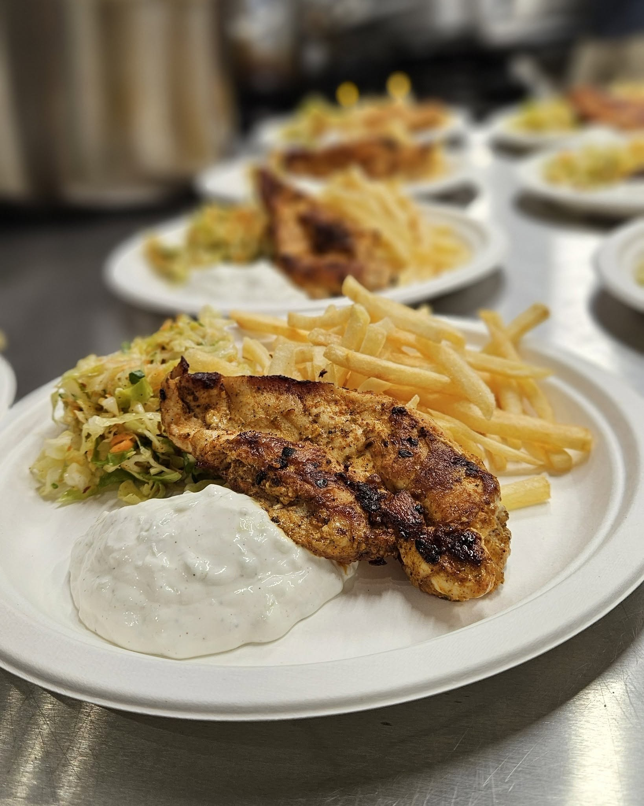

Grillowane specjały nad Zegrzem - co serwujemy z rusztu

Sezon na grilla traktujemy poważnie - od jakości mięsa po świeże warzywa.
Lato w porcie Wodnik smakuje rusztem. Zapach grillowanych dań niesie się po tarasie i bywa najlepszą zachętą, by usiąść u nas na dłużej. W tym sezonie postawiliśmy na proste, ale dopracowane kompozycje.
Co znajdziesz w karcie z grilla
- Grillowana karkówka - marynowana po naszemu, podawana z pieczonymi ziemniakami.
- Pierś z kurczaka z rusztu - soczysta, z dodatkiem tzatziki i świeżej surówki.
- Warzywa z grilla - sezonowe, lekko przypieczone, z oliwą i ziołami.
- Kiełbasa z ogniska - klasyk, który zawsze się sprawdza przy wodzie.
Skąd bierzemy składniki
Stawiamy na lokalnych dostawców i sezonowość. Dzięki temu warzywa są świeże, a mięso trafia na ruszt w najlepszej formie. To prosta zasada, która naprawdę słychać w smaku.
Z czym to podajemy
Do dań z grilla świetnie pasują nasze sezonowe lemoniady i zimne piwo z nalewaka. Jeśli wahasz się przy wyborze, obsługa chętnie podpowie zestawienie idealne na dany dzień.